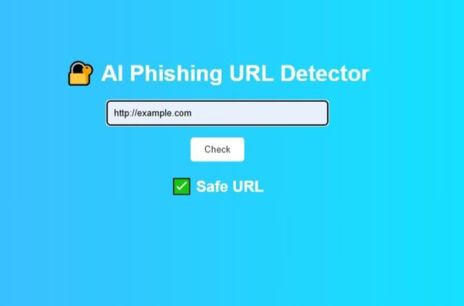

ECE graduate who builds Arduino-based embedded systems and designs PCBs in KiCad, and also writes Python tools for machine learning, AI agents and cybersecurity.
I am looking for entry-level roles in PCB design, embedded systems and electronics hardware, or in Python, machine learning and cybersecurity.
I finished my B.E. in Electronics and Communication Engineering in 2026. My project work centres on embedded hardware: wiring sensors and actuators to an Arduino, writing the firmware in Embedded C/C++, and connecting it to the outside world over GSM and Bluetooth.
I trained in KiCad for schematic capture and PCB layout, and I am learning Verilog and RTL basics. On the software side I built an AI course recommendation agent with the Groq LLM, a phishing URL detector and a skin lesion classifier, and I completed a cybersecurity internship.
A campus recycling machine that sorts plastic, metal and glass bottles and rewards each student with points. The student logs in with their USN on a keypad, the machine classifies the bottle, and an SMS confirms the points.
Metal bottles are found with an inductive sensor. Plastic and glass are separated by weight using a load cell and HX711.
Two servo motors drop the bottle and swing a flap to the right bin.
Users and points are stored in the Arduino EEPROM and managed from a phone over Bluetooth (ADD USER, DELETE USER, LIST).
A GSM module sends an SMS after every deposit and a "system full" alert when the bins are full.
Tested with 50 bottles per type: plastic 90%, metal 100%, glass 80% sorted correctly.
An AI agent that reads a student's profile (background, current skills and career goals) and a course catalogue, then uses the Groq LLM to write a personalised recommendation: a learning path, prerequisites, a timeline and career advice.
Classifies skin lesion images as benign or malignant. A CNN built from scratch reached only 45.5% test accuracy, so I switched to transfer learning with EfficientNetB7.
Python, Scikit-learn, TF-IDF, Random Forest, Flask

Classifies a URL as safe or phishing and shows the answer on a Flask web dashboard. Precision on phishing URLs is 0.92, but recall is 0.56, so improving recall is my next step.